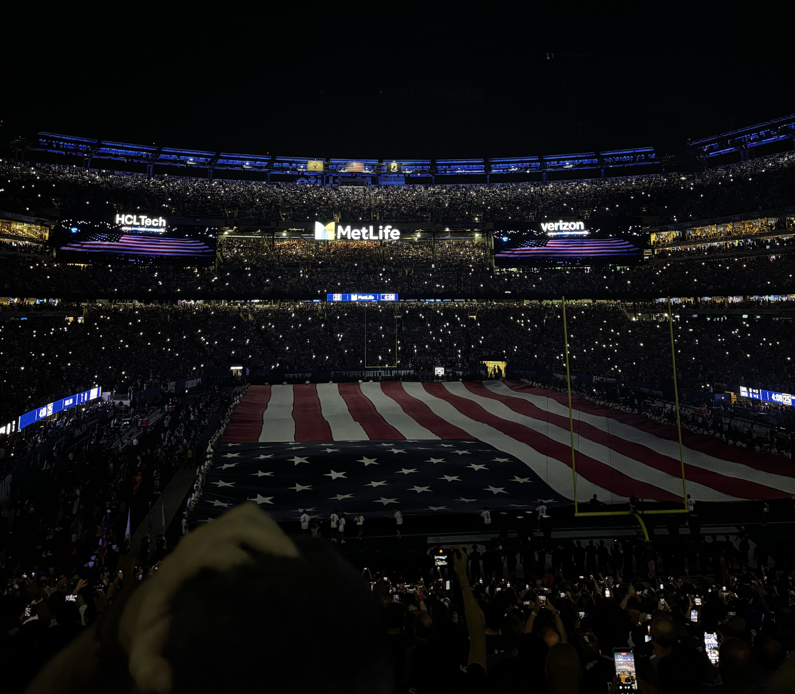

Week 1: vs. DAL
Sunday, September 13, 2026
W 28-20
Box ScoreThe 2026 season is John Harbaugh's first as head coach of the New York Giants, and the team is off to a strong start. Despite losing starting quarterback Jaxson Dart to a season ending knee injury in Week 2, the 3-1-1 Giants sit atop the NFC East for the first time since 2015.
Use the menu above or the cards below to see the final score, stat leaders, team stats, and highlights for each game.

Sunday, September 13, 2026
W 28-20
Box ScoreMonday, September 21, 2026
L 6-28
Box ScoreSunday, September 27, 2026
W 12-7
Box ScoreSunday, October 4, 2026
W 36-24
Box ScoreSunday, October 11, 2026
T 27-27 (OT)
Box ScoreSunday, October 18, 2026
W 34-27
Box Score| Week | Date | Opponent | Result | Record |
|---|---|---|---|---|
| 1 | September 13, 2026 | vs. Dallas Cowboys | W 28-20 | 1-0 |
| 2 | September 21, 2026 | @ Los Angeles Rams | L 6-28 | 1-1 |
| 3 | September 27, 2026 | vs. Tennessee Titans | W 12-7 | 2-1 |
| 4 | October 4, 2026 | vs. Arizona Cardinals | W 36-24 | 3-1 |
| 5 | October 11, 2026 | @ Washington Commanders | T 27-27 | 3-1-1 |
| 6 | October 18, 2026 | vs. New Orleans Saints | L 34-27 | 3-2-1 |